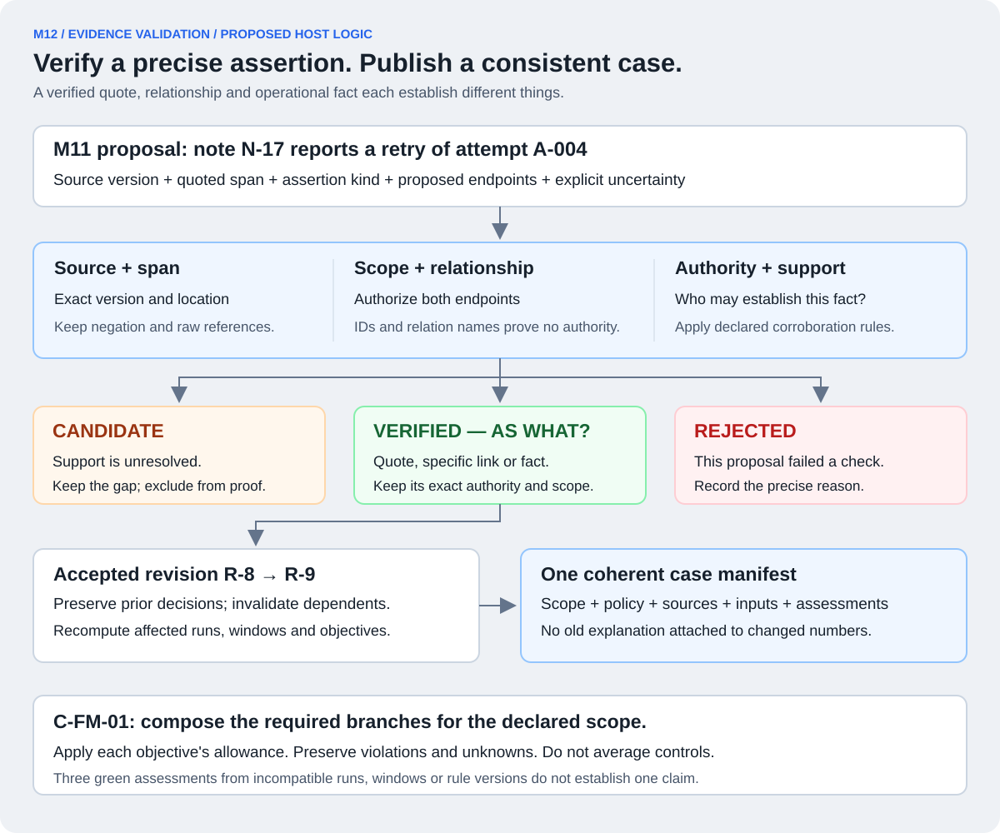

M12 / 16 · EVIDENCE VALIDATION AND ASSESSMENT COMPOSITION
What exactly has been verified? Keep the evidence and verdict in the same revision.
M12 checks proposed facts and relationships against declared source authority, publishes accepted-input revisions and composes consistent control and claim results. It is deterministic host logic around M11's proposals and the M07–M09 calculations.
M11 can propose that a note mentions a retry. M12 determines what the available evidence actually supports, preserves uncertainty, and ensures the final explanation refers to the same inputs as the control result.
Design boundary: these validators, schemas and examples are proposed application contracts, not existing AWS or ServiceNow APIs. No live validation pipeline has been implemented. The slide's 10,800 / 10,000 example is illustrative; the note IDs, revisions and proposals below are invented teaching records.

Verification has a precise subject. Promotion changes accepted inputs; it cannot silently change a verdict or reuse an explanation from incompatible evidence.
Begin with a typed proposal, not a trusted sentence.
Continuing M11, suppose source note N-17 version 3 says, “The request timed out; attempt A-004 was retried.” Nemotron returns a proposal that cites this passage and suggests a relationship to A-004.
Proposed field
Illustrative content / purpose
Proposal identity
LP-017, with immutable proposal version and extractor model/prompt/schema provenance.
Source reference
Trusted source namespace + N-17 + version 3 + an exact declared span coordinate.
Literal excerpt
The cited text, with negation and qualifiers preserved.
Assertion kind / relation
For example SOURCE_SAYS or note MENTIONS attempt; this is different from an operational RETRY_OF relationship.
Proposed endpoints
Canonical note and attempt references, resolved within authorized source/run scope.
Initial validation status
CANDIDATE. The model cannot submit an authoritative VERIFIED flag.
Uncertainty
Alternative matches, missing corroboration and the precise unsupported proposition.
Team permissions, allowed scope, source authority and policy versions come from server-owned context. A model-supplied team name, source label or relation name cannot grant authority.
Apply three different checks.
1 · Schema, source and span.
Check allowed fields/types, immutable source/version existence, exact cited location and whether the excerpt matches. The coordinate convention must be declared: byte/code-point offsets for text, or page/region/time references for media. Preserve the raw source and the mapping from any normalized text back to it.
Normalization cannot silently change identifiers, minus signs, decimal separators, units or meaning. Unsupported normalization or ambiguous mappings remain unresolved. Finding the word “retry” in “the retry did not happen” does not validate an affirmative retry claim. Preserve surrounding negation and qualifiers; literal matching proves occurrence, not general semantic entailment.
2 · Scope and relationship.
Resolve both endpoints using trusted team and source namespaces; reauthorize both records and verify the relation type and cardinality. A bare A-004 from another source or team is not the same attempt. A ticket can span several runs, so sharing a ticket number alone does not establish run membership.
A passage can demonstrably mention a literal ID without establishing which operational entity it refers to. Verify any stronger canonical relationship through the accepted source mapping. A relationship named RETRY_OF also needs evidence of the actual attempt/execution relationship; the name itself proves nothing.
3 · Authority and corroboration.
Ask which source is authorized to establish this particular fact under the pinned rule. A note can establish its own statement. An accepted provider/gateway usage source may establish token counts. An independently accepted scenario reference supplies diagnostic labels. Those authorities are not interchangeable.
A model's confidence, another agreeing LLM, a newer-looking timestamp or a polished narrative cannot override the declared source hierarchy. Conflicts remain explicit; resolve them using the fixed precedence/correction rules and exact versions, not whichever value yields a passing result.
VERIFIED must answer “verified as what?”
Validated object
What verification establishes
What it does not establish
SOURCE_SAYS quotation
This captured source contains this exact attributed statement.
That its account is operationally true.
Specific note → attempt relationship
The approved mapping establishes the stated relation between those scoped entities.
That the note's entire narrative, token figure or causal explanation is true.
VERIFIED_OPERATIONAL_FACT
The declared authoritative source and corroboration establish this precise fact at this revision.
Unrelated facts or completeness of the entire run.
Store assertion kind, relation type, validation status, supporting references, authority rule and reason separately. A verified SOURCE_SAYS object stays a source statement. Do not attach one global “trusted” flag to a record and inherit it across every linked control.
If a relationship is verified for Control 7 applicability, that does not independently validate a Control 16 charge. Controls consume only accepted facts appropriate to their declared tests. Multiple bindings still represent one execution charge, not multiple charges.
Accept, leave unresolved, or reject a proposal.
Status
When it applies
Example
VERIFIED
All checks required for this precise typed proposition pass.
A captured quote is validated as SOURCE_SAYS; a distinct operational fact requires its own authority checks.
CANDIDATE
Support is missing, inaccessible, ambiguous or conflicting and has not resolved the proposition.
The note mentions a similar ticket, but no accepted mapping establishes the run.
REJECTED
This proposal fails a stated check under the selected source/input revision.
Its quote is absent from the cited version, its field type is invalid, or it attempts an unauthorized cross-team relationship.
REJECTED means the submitted proposal failed validation. It does not necessarily prove the underlying real-world claim false. Conversely, inability to access a source must not turn into “no such event happened.” Unauthorized proposals remain in protected audit records; user-facing errors must not disclose another team's record existence or content.
Manual adjudication, if allowed by the declared process, records the authorized person, exact proposition, source basis, rationale and applicable rule. It does not fabricate missing sources or establish completeness merely by clicking approve. No human response is required to publish an honest first case with unresolved candidates.
Promotion creates a new accepted-input revision.
Suppose raw-source snapshot S-12 already contains all captured files. Accepted-input revision R-7 has a disputed usage-to-run association. Authoritative reconciliation resolves that association, producing R-8 without changing the raw bytes in S-12.
The old R-7 inputs and assessment remain reproducible. R-8 receives its own accepted fact/binding versions, validation provenance and dependency references. The original candidate and source assertions are preserved; acceptance is recorded as a new decision, not an in-place rewrite of history.
Concurrent promotions must validate against an explicit base revision and publish through an atomic conditional commit or equivalent consistent revision mechanism. If the base changes, revalidate/rebase the proposal against the new accepted inputs; do not overwrite another decision or combine incompatible resolutions.
Supersession, authority changes and evidence invalidation are different. A later correction can replace an earlier accepted value. Authority changes carry a recorded scope and effective time: prospective withdrawal blocks acceptance within the affected scope/time but does not automatically falsify previously valid historical facts. If an evidence/source invalidation applies to earlier records, mark the affected facts and dependent proofs invalid while retaining their original decisions and basis. Do not present known-invalid inputs as currently verified. Access revocation is a separate permission change enforced on reads and publication even for old cases.
An already exported offline case describes its declared as-of state. It cannot automatically know about a later revocation or correction; it must not be advertised as a current-state assurance result without refresh.
Recompute every affected result, including larger scopes.
M12 tracks which facts and bindings each assessment depends on. When an accepted change affects identity, scope, measurement, expected population or another control input, mark dependent assessments and caches stale and trigger the appropriate pure tests.
Accepted change
Potential consequences
Usage belongs to a different resolved run
Reassess both affected runs' accounting and any containing run-population/claim results; do not charge it to both.
An authoritative event or obligation changes
Reassess affected Control 7 coverage/timing and dependent claims.
An accepted diagnostic outcome or label changes
An assessed-outcome correction triggers affected window/interval recalculation. A correction affecting frozen baseline data or labels marks dependent results stale or invalid and requires an explicit baseline/restatement revision under the declared correction process. Preserve the original dated reference; the restatement is not the original predeclared baseline. New scored work needs a valid basis frozen before that work, as required by M04/M08.
A verified note relationship adds explanatory context only
Update accepted context/case references; it need not change a control's arithmetic.
M05 still owns source reconciliation, M07–M09 own the calculations and M10 alone owns live admission/settlement state. A judge query or proposal promotion cannot release a reservation as a side effect. M12 coordinates accepted versions and dependent recomputation.
Do not drop obligations or unresolved executions merely because a model proposal was rejected. Required populations come from their independent authoritative basis. Reassess all affected scopes; a parent population or claim remains stale/pending until its dependencies are coherent. Unaffected results may be reused only when their scope, policy and exact input dependencies are verified unchanged.
Keep five questions separate in the answer.
Question
Illustrative answer
Did the requirement hold?
BREACHED: accepted usage establishes 10,800 against a 10,000 cap.
Did the safeguard operate?
The accounting test ran successfully; preventive enforcement may be unavailable or unverified.
Is the evidence sufficient?
Enough accepted evidence proves this breach; unrelated missing records can leave overall coverage incomplete.
Did the case analysis finish?
COMPLETE, PARTIAL or DEGRADED according to M13's declared analysis coverage and model workflow.
Is this hackathon control completed?
Only if its required mechanism, scope, dated rules, actual/accepted pass and breach cases, reproducible test and export are delivered.
A working detector can correctly report a breached requirement. A complete investigation can correctly report INDETERMINATE. Three polished explanation pages do not constitute three completed controls. Our actual implemented completion remains 0/3.
Per-control satisfaction uses SATISFIED, BREACHED, INDETERMINATE or NOT_ASSESSED. Complete, valid inputs within the declared limits/allowances support SATISFIED. Accepted, correctly scoped, deduplicated proof beyond the applicable allowance supports BREACHED even with unrelated gaps. Missing/conflicting inputs without such proof give INDETERMINATE for a selected eligible test. No eligible/implemented assessment gives NOT_ASSESSED. Missing inventory for an eligible run is not an empty successful population.
Compose C-FM-01 using a scope manifest.
The management claim covers event recording, diagnostic performance/drift and token spend during the declared fault-resolution scope. Its manifest identifies required controls 7/9/16, assessed runs and windows, run-to-window membership, policy/specification versions, source/input revisions, cutoffs, expected populations and referenced assessments.
Control 9 describes comparable windows, not a diagnosis percentage for one run. A single window can cross its limit while an interval remains within a declared nonzero violating-window allowance. Keep that crossing and its required alert visible; compose the objective-level branch for the exact claim scope after applying its allowance, rather than treating every red child row as an automatic aggregate breach.
Required branch results for the declared claim scope
Claim result
All required branches SATISFIED with compatible, complete scope/dependencies
SATISFIED.
At least one valid required branch is BREACHED within that scope
BREACHED for that declared scope; disclose other unknown branches separately.
No proved required breach, but a branch is unknown/unassessed or scope/dependency compatibility is unproved
NOT_ESTABLISHED.
Three green results from unrelated runs, windows or incompatible rule versions
NOT_ESTABLISHED for the requested claim; do not average or majority-vote them.
A breach from outside the declared scope does not establish this claim's breach. Conversely, a verified in-scope failure of a required branch remains meaningful when another branch is missing. Retain the precise proof scope rather than pretending every branch was assessed.
The original source example permits zero over-cap runs: FM-B at 10,800 violates the 10,000 cap, so the relevant Control 16 objective breaches. If another predeclared policy allows exceptions, assess that objective's population allowance separately and retain each overshoot. Never relax an assessed run's thresholds afterward to make the claim green. A completed subset of controls remains partial claim coverage.
Publish one consistent case, even if evidence changes mid-answer.
Suppose Nemotron composes an explanation using R-8, but a promotion creates R-9 before publication. The host may publish a clearly labelled, still-valid R-8 as-of case, or recompute and rebuild against R-9 within the original remaining deadline and call budgets. It must not attach R-8 prose to R-9 numbers.
If an old dependency is already known to be invalid, the old result may be displayed only as historical/invalidated; do not publish it as current authoritative proof. If refreshed calculations cannot be completed in budget, return a truthful partial/degraded state. Do not reset the timer or silently add another model call.
M12 checks the explanation's allowed templates and reference IDs against the selected assessments and accepted-input revision. M13 renders exact values, quotations, negation and qualifiers from those records; free-form hypotheses stay labelled or are omitted. Citation existence alone does not establish semantic truth.
Publication commits a manifest referencing durable, mutually consistent required records and explicit gaps. Incomplete writes stay pending; do not expose an apparently complete case whose inputs cannot be resolved. Missing critical required evidence is a claim/control-completion limitation, even if clearly disclosed in the export.
Cache identity includes accepted-input revision, source snapshot, scope, authorization and relevant software/policy versions. Recheck current access and dependency validity before reuse or export. Source/input updates produce a new linked case; earlier delivered cases retain their own provenance.
The eight M12 subcomponents.
ID
Component
Responsibility
M12.1
Schema / source / span validator
Check typed proposals and exact source coordinates; preserve raw text and normalization mappings.
M12.2
Scope and relationship validator
Authorize both endpoints and validate the exact scoped relation.
M12.3
Authority and corroboration checker
Distinguish a validated source statement from each operational fact.
M12.4
Promotion / revision manager
Record specific validation decisions and publish coherent accepted-input revisions with history.
M12.5
Affected-control reassessment trigger
Invalidate/recompute dependent run, window, population and claim results.
M12.6
Assessment-state composer
Keep satisfaction, operation and evidence sufficiency distinct from analysis and delivery completion.
M12.7
C-FM-01 claim composer
Apply required branches to a compatible declared scope, respecting objective-level allowances.
M12.8
Explanation / consistency validator
Ensure the rendered case's references, assessments and input revisions agree.
These are host modules in the shared package, not eight new services or another LLM judge. Automated checks establish declared structural/authority properties; arbitrary narrative truth is not solved by a schema validator.
What must we test and show?
Use held-out and adversarial proposals with known accepted outcomes: correct quote, omitted negation, wrong source version, similar IDs in different teams, inaccessible support, unresolved conflict, forbidden relation, duplicate evidence bindings and manual decisions without authority.
Exercise a concurrent promotion, changed run ownership, an upward/downward authoritative correction, withdrawn authority, stale explanation, revoked cache access, pending publication and mismatched claim scopes. Verify each affected calculation and preserve the previous decision history.
Show an accepted source statement that remains non-authoritative for usage, a verified operational fact that changes the right assessment, an unresolved candidate that stays visible, and a rejected proposal with a precise reason. Prove zero false VERIFIED links and unsupported numeric/verdict assertions on the fixed critical suite; do not claim that finite tests establish universal correctness.
Deliver proposal/validation records, source references, policy/authority rules, accepted-input and assessment revisions, dependency/provenance manifests, reproducible control queries and the exported case. These are planned acceptance requirements; no such runtime campaign has been executed yet.
INDEPENDENT AI REVIEWS
Promotion and composition reviewed separately.
One reviewer checks source authority, identity, normalization and proposal states. Another checks compatible claim scopes, revision races, invalidation and case publication. This is design review, not a running validator certification.
Final verdict: ACCEPT from both independent reviewers after two medium clarifications. Authority changes now apply by scope/effective time without automatically invalidating past facts; frozen baseline/label corrections require an explicit restatement that preserves the original dated reference. Final corrected text was verified by both reviewers. No remaining material findings in typed verification, source scope, proposal states, revision races, claim allowances or publication consistency. No runtime validation pipeline was tested.
NEXT · M13
How does the judge ask a question and inspect the answer?
M13 owns scope selection, snapshot loading, bounded workflow, cache, rendering, honest fallback and publication of the inspectable evidence case.